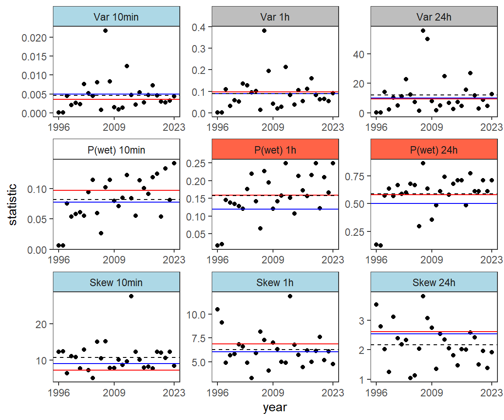
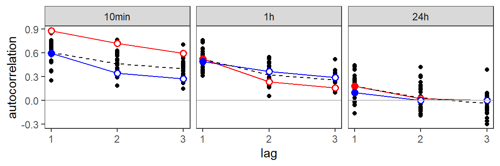
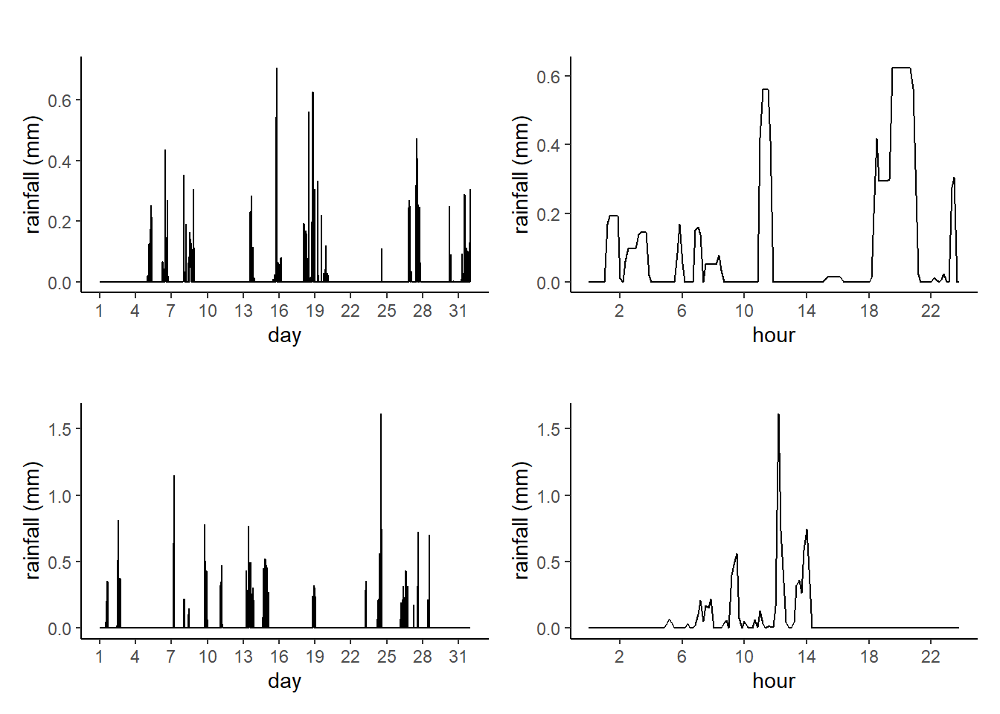

library(rainy)
library(kableExtra)
library(patchwork)# Set initial parameter estimates
theta <- c(0.01, 1, 10, 0.1, 10)
names(theta) <- c("$\\lambda$ (1/h)", "$\\mu_X$ (mm)", "$\\beta$ (1/h)", "$\\gamma$ (1/h)", "$\\eta$ (1/h)")
# Use fitting property Set 1
x <- fitBL0(data = bremenStats, theta = theta, properties = "set1",
months = 1)
# Use fitting property Set 2
x6 <- fitBL0(data = bremenStats, theta = theta, properties = "set6",
months = 1)# Calculate estimates and confidence intervals
sex <- sqrt(diag(vcov(x)))
sex6 <- sqrt(diag(vcov(x6)))
coefCompare <- cbind(t(coef(x)), sex, confint(x), t(coef(x6)), sex6, confint(x6))
# Set parameter names
BL0pars <- c("$\\lambda$", "$\\mu_X$", "$\\beta$", "$\\gamma$", "$\\eta$")
rownames(coefCompare) <- BL0pars
colnames(coefCompare) <- rep(c("estimate", "SE", "lower", "upper"), 2)
# Produce the table
kableExtra::kbl(coefCompare, digits = 3, booktabs = FALSE, align = "c",
row.names = TRUE, escape = FALSE) %>%
kable_styling() %>%
add_header_above(c(" ", "Set 1" = 4, "Set 2" = 4))| estimate | SE | lower | upper | estimate | SE | lower | upper | |
|---|---|---|---|---|---|---|---|---|
| \(\lambda\) | 0.026 | 0.003 | 0.020 | 0.033 | 0.025 | 0.003 | 0.019 | 0.031 |
| \(\mu_X\) | 0.799 | 0.080 | 0.658 | 0.972 | 1.295 | 0.170 | 1.001 | 1.676 |
| \(\beta\) | 0.393 | 0.134 | 0.201 | 0.768 | 4.300 | 0.590 | 3.286 | 5.626 |
| \(\gamma\) | 0.092 | 0.024 | 0.055 | 0.153 | 0.233 | 0.023 | 0.192 | 0.282 |
| \(\eta\) | 1.408 | 0.137 | 1.164 | 1.704 | 8.202 | 0.585 | 7.131 | 9.433 |
# Predict properties
y <- predict(x)
# Create the plot
plot(y, rainFit2 = x6, stats = c("var", "pwet", "skew"), yearLabels = c(1996, 2009, 2023))
plot(y, rainFit2 = x6, lags = 1:3, acf = TRUE)
# Fit 1
y1 <- simulate(x, ndays = 31, h = 1 / 6, seed = 2)
p1 <- plot(y1)
p2 <- plot(y1, year = 2023, month = 1, day = 18)
# Fit 2
y2 <- simulate(x6, ndays = 31, h = 1 / 6, seed = 34)
p3 <- plot(y2)
p4 <- plot(y2, year = 2023, month = 1, day = 24)
(p1 | p2) / (p3 | p4)